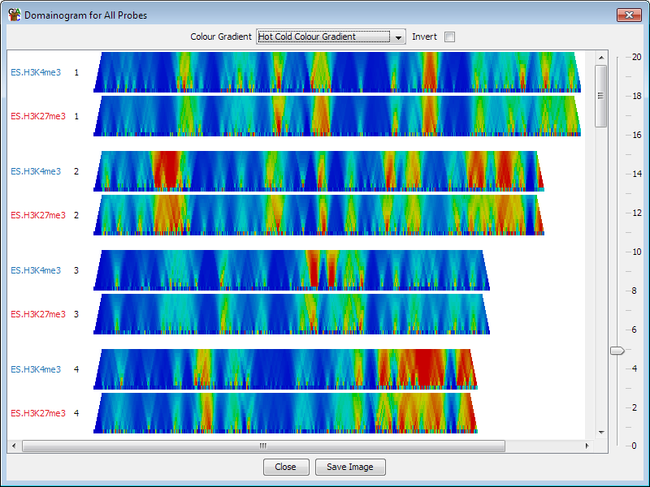
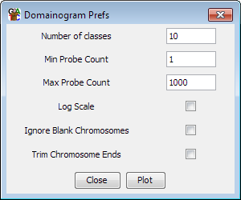

The Domainogram Plot
The domainogram is a plot which allows you to look at the current quantitation at a
range of different scales over the whole genome. The plot itself uses colours to represent
the current quantitation, and then generates lines of data where each line smoothes the
current quantitation over a number of different scales (defined by the number of adjacent
probes). Using this plot you can therefore see whether there are interesting biases in
your quantitation, and if so then at what scale they appear.
The plot will be drawn for whichever data stores are currently visible so you can use it to
compare different data stores.

Options

- You can choose the number of lines across the plot. More lines will mean a smoother
plot, but will also make the plot slower to calculate
- You can choose the minimum and maximum number of probes to average the quantitation
over. The numbers here are the amount of context either side of the probe being
drawn, so using a value of 10 will average over 21 probes (10 either side, plus the
probe you're actually measuring).
- You can choose whether the progression from your minimum to your maximum value goes
along a linear or a logarithmic path
- You can choose whether to leave out chromosomes for which there are no probes in the
probeset you have chosen to draw.
- You can choose to trim the lenghts of your chromosomes to the points where the first
and last probes appear so as to not make plots with large blank areas when you're only
quantitating part of a chromosome